This is the complete Skinning guide for Midnight. It covers the best farming spots, profession equipment, lures, diffusers, Knowledge Points, and specialization paths, plus what changed from The War Within.
This is the complete Skinning guide for Midnight. It covers the best farming spots, profession equipment, lures, diffusers, Knowledge Points, and specialization paths, plus what changed from The War Within.
There are only 2 days left until early access release when I'm publishing this guide, and there are still many issues with Skinning. I'll highlight them in the guide, but keep in mind that anything might change here. I'll keep testing in the last two days. Maybe they hotfix these, or we get a new beta build, or there is a version of the game that beta players won't get and live will be different.
Skinning Trainer
You can learn Midnight Skinning from Tyn in Silvermoon City.
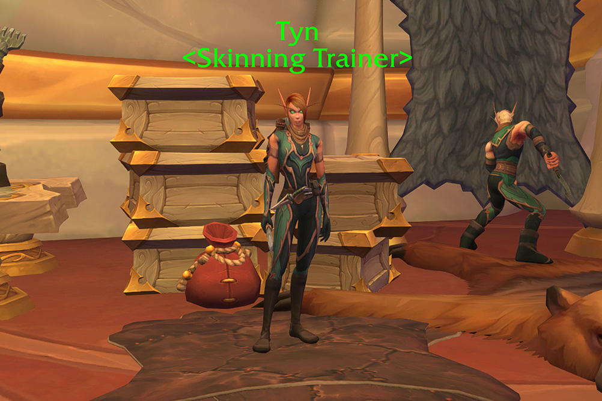
What Changed in Midnight
If you played a Skinner in The War Within, here's what's different.
-
Fishing Lures Removed from Skinning: Fishing lures are no longer part of the Skinning profession. They've been moved to Fishing where they belong.
-
Two Qualities Only: Just like other professions, reagents now only have Silver and Gold quality. Bronze is gone.
-
Lure System Expanded: There is now one lure for each zone, plus a Grand Beast Lure. You throw diffusers at mobs instead of placing lures on the ground to attract creatures.
-
Track High Value Beasts: A new ability that shows High Value Beasts on your minimap. These mobs give more leather when skinned.
-
No More Refining: You can no longer refine leather, scales, or hides to a higher rank. What you skin is what you get.
-
New Epic Tier for Profession Equipment: Profession equipment now includes an Epic tier on top of Green and Blue.
Skinning Materials
These are the base skinning materials in Midnight.
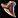
Carving Canine either have an extremely low drop rate (which I doubt since they are used in many recipes), or they forgot to add them to most creatures. I killed hundreds of beasts everywhere and I didn't get a single one from any of them on beta.| Material | Source |
|---|---|
| Leather mobs | |
| Scale mobs | |
| Void-Tempered Hide | Rare mobs, Sharpen Your Knife, lure beasts |
| Void-Tempered Plating | Rare scale mobs, Sharpen Your Knife, lure beasts |
| Furred creatures | |
| Feathered creatures | |
| Carving Canine | Fanged creatures |
| Renowned Beasts (lure system) | |
| Renowned Beasts (lure system) | |
| Renowned Beasts (lure system) |
High Value Beasts
This is a new system in Midnight. High Value Beasts show up on your minimap as a skinning knife icon. When you skin one, you get more leather, depending on the mob, that's anywhere from 5 to 10 leather or scales.
You don't need to do anything special to track High Value Beasts. The tracking is automatically enabled when you learn Midnight Skinning, but you can also toggle it on and off with Find High-Value Beasts in your spellbook.
The beasts have a red outline and they glow a bit to make them easier to spot.
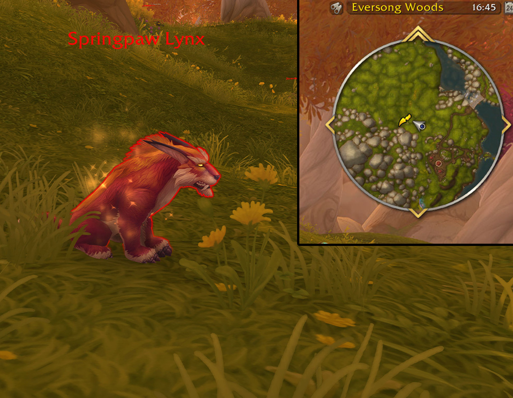
Diffusers
Diffusers replace the old lure system for Mote farming. Instead of placing a lure on the ground and waiting, you throw a diffuser at a mob. When you kill and skin it, you get Motes.
To use a diffuser, just target any skinnable beast, click the diffuser in your bags to throw it at them, and then kill and skin the mob normally.
Each diffuser costs 2 Motes of its type to craft. The first diffuser you unlock is the Lightbloom Diffuser at 1 point in Dedicated Diffuser.
| Diffuser | Material Cost | Drops |
|---|---|---|
| Lightbloom Diffuser | 2x Mote of Light | 1-4 Mote of Light |
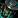 Wild Diffuser |
2x Mote of Wild Magic | 1-4 Mote of Wild Magic |
| Primal Diffuser | 2x Mote of Primal Energy | 1-4 Mote of Primal Energy |
| Void Diffuser | 2x Mote of Pure Void | 1-4 Mote of Pure Void |
Majestic Lures & Renowned Beasts
Renowned beasts are similar to what we have in War Within how 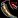
This system is probably bugged. Right now, some Renowned Beasts are spammable while others are on a daily cooldown. If that is intended, it means you can convert fish into leather with some lures, which feels wrong. Eversong and Voidstorm seem spammable, but Zul'Aman and Harandar are daily, so the rules are inconsistent.
The Majestic material drop rate also looks off. I had full specialization unlocked, so my drop chance should have been higher. Across 18 total beast kills, I got 1 Majestic material. Making this many baits took hours of fish farming.
I couldn't find the Grand Beast Lure location, and it looks like no one has confirmed it yet. That might change how this system feels. I see the possibility that the Grand Beast will have guaranteed or at least a lot higher drop chance, while the rest of them will just have a lower chance, but this is all just speculation. I will update this section as soon as I get more data.
Majestic Lure Recipes
Lures are unlocked through in the Talented Tracker Specialization tree.
| Lure | Fish Required | Spec Requirement |
|---|---|---|
| Majestic Eversong Lure | 8x |
Talented Tracker (free) |
| Majestic Zul'Aman Lure | 8x Gore Guppy | Talented Tracker (10 pts) |
| Majestic Harandar Lure | 8x 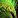 Fungalskin Pike, 8x |
Talented Tracker (20 pts) |
| Majestic Voidstorm Lure | 4x |
Talented Tracker (30 pts) |
| Grand Beast Lure | 4x Null Voidfish | Talented Tracker (40 pts) |
Majestic Lure Locations and Drop rates
You can't use lures just anywhere. Each zone has a specific spot where you have to place the lure to summon the Renowned Beast.
The three new reagents are:  Majestic Hide,
Majestic Hide,  Majestic Fin, and
Majestic Fin, and  Majestic Claw. The drop rates are not confirmed yet, we need more data.
Majestic Claw. The drop rates are not confirmed yet, we need more data.
| Zone | Location | Renowned Beast |
|---|---|---|
| Eversong Woods | 41.95, 79.70 | Gloomclaw |
| Zul'Aman | 47.55, 53.65 | Silverscale |
| Harandar | 66.00, 48.00 | Lumenfin |
| Voidstorm | 54.15, 65.27 | Umbrafang |
| Grand Beast | Unknown | Netherscythe |
Profession Equipment
Skinning profession equipment now includes an Epic tier. There's no primary skill difference between Blue and Epic pieces. The only difference is the secondary stat amount.
You have three equipment slots: Cap, Pack, and Knife. Cap and Pack are accessories from Leatherworking, and the Knife is a tool from Blacksmithing.
 Silverleaf Thread is sold by vendors, so if you are submiting Crafting Orders, you can buy them from the Leatherworking supply vendor near your trainer.
Silverleaf Thread is sold by vendors, so if you are submiting Crafting Orders, you can buy them from the Leatherworking supply vendor near your trainer.
Finesse, Deftness, or Perception for Skinning?
It's probably best to have two Tools, one with Finesse and one with Perception, and swap them based on what you are doing.
When farming mobs normally, just use the Finesse Tool, when using your Sharpen Knife, killing Rare mobs or Renowed Beasts use the perception one.
Knowledge Points
You can collect around 59 Knowledge Points in week one from these sources:
| Source | KP | Details |
|---|---|---|
| Amani Book | 10 | Whisper of the Loa: Skinning sold by Magovu in Zul'Aman. (Amani Tribe renown) |
| Abundance Book | 10 | Echo of Abundance: Skinning from the Abundance event. |
| 8 Skinning Treasures | 24 | 3 KP each, scattered across all zones. |
| Treatise | 1 | |
| Weekly Trainer Quest | 3 | Weekly quest from the profession trainer. Rewards |
| Weekly Gathering Drops | ~8 | Knowledge items that randomly drop while skinning. You'll loot 5x 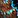 Manafused Sample (1 KP each), then a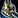 Mana-Infused Bone (3 KP) as the final drop for the week. |
| Darkmoon Faire | 3 | Monthly, not weekly. A quick profession quest for +3 Knowledge Points and +2 Profession Skill when the Faire is in town. The Faire starts on the Sunday before the first Monday of each month. |
Weekly Sources (~12 KP/week)
After the first week, your recurring weekly sources are:
- Trainer Quest: 3 KP per week
- Gathering Drops: ~8 KP per week (keep skinning and they'll drop naturally)
- Inscription Treatise: 1 KP per week (submit a public crafting order since they're BoP, or craft on an Inscription alt)
- Darkmoon Faire: 3 KP per month (not weekly, but grab it when the Faire is up)
Unlike crafting professions, Skinning does not get weekly chest drops. Your main weekly source is just skinning beasts and the trainer quest.
Treasure Locations
There are 8 skinning treasures across the Midnight zones. Each gives 3 Knowledge Points. You should be able to find most of them while leveling.
| Treasure | Zone | Map |
|---|---|---|
| Sin'dorei Tanning Oil | Silvermoon City | |
| Thalassian Skinning Knife | Eversong Woods | |
| Cadre Skinning Knife | Zul'Aman, Atal'Aman | |
| Amani Skinning Knife | Zul'Aman | |
| Amani Tanning Oil | Zul'Aman | |
| Primal Hide | Harandar | |
| Lightbloom Afflicted Hide | Harandar | |
| Voidstorm Leather Sample | Voidstorm, Slayer's Rise |
TomTom Waypoints & Treasure Check Macro
TomTom Waypoints
/ttpaste in-game/way #2393 43.2, 55.7 Sin'dorei Tanning Oil (Skinning) /way #2395 48.40, 76.26 Thalassian Skinning Knife (Skinning) /way #2536 44.91, 45.17 Cadre Skinning Knife (Skinning) /way #2437 33.08, 79.07 Amani Skinning Knife (Skinning) /way #2437 40.39, 36.01 Amani Tanning Oil (Skinning) /way #2413 69.52, 49.18 Primal Hide (Skinning) /way #2413 76.0, 51.0 Lightbloom Afflicted Hide (Skinning) /way #2444 45.5, 42.3 Voidstorm Leather Sample (Skinning)
Treasure Check Macro
true = collectedSpecializations
Skinning has three specialization trees. I'll explain what each tree does and give you a few build options for your first week.
- Thorough Tanning - Focuses on standard leather and scale gathering. This tree gives you more base materials and unlocks extra charges for your Sharpen Your Knife cooldown to guarantee hide drops.
- Gainful Gathering - Focuses on unique materials like Motes, meat, and species-specific drops (fur, teeth, feathers). This is where you unlock Diffusers.
- Talented Tracker - Focuses entirely on the lure system and Renowned Beasts. You need this tree to craft Majestic Lures and to increase your drop chance for Majestic Materials.
Pure Farming Build
This build focuses on maximizing your skill and finesse for one specific material type (leather or scales). It's the best choice if you plan to spend hours grinding mobs for base materials.
0-80 Points
- Invest 10 points into the base Thorough Tanning node to unlock your first sub-specialization.
- Learn Lasting Leather (if you want to farm leather) OR Superb Scales (if you want to farm scales)
- Put 40 points into it. This maximizes your skill for that specific creature type.
- 30 points into Thorough Tanning to get all the possible extra skill you can get. This will increase the number of Gold Quality leathers you get.
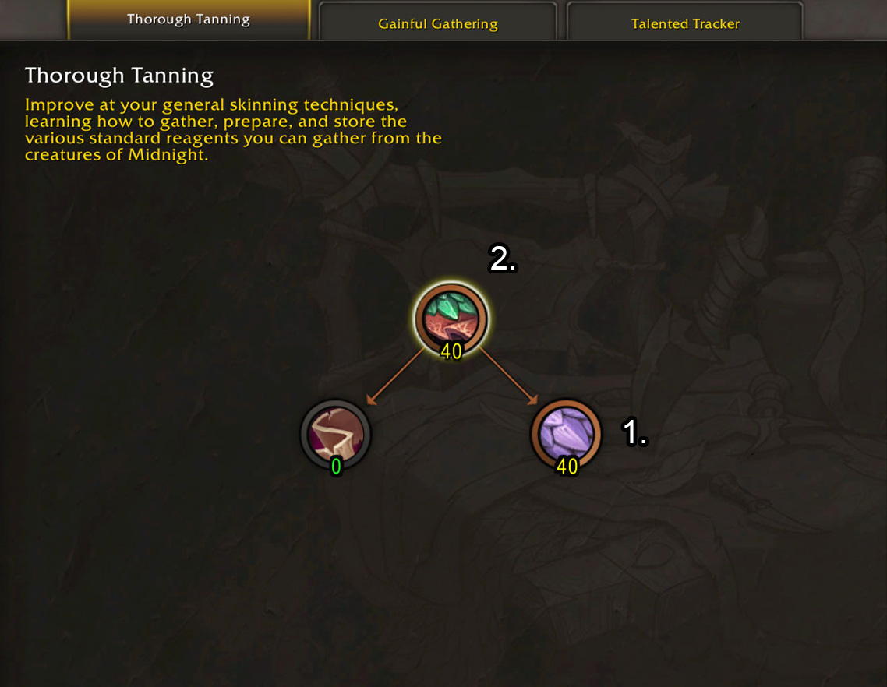
80-130 Points
- Put 10 points into the base Gainful Gathering node to unlock a sub-specialization.
- Learn Careful Carving (Finesse) or Trophy Taker (Perception). Which one to take? If species-specific drops worth a lot, go for Trophy Taker, if base leathers are more gold, go for Careful Carving.
- Put 40 points into your chosen sub-spec.
The meat Carving ability is useless basically, so we only want the finesse in Careful Carving.
Careful Carving (Finesse)
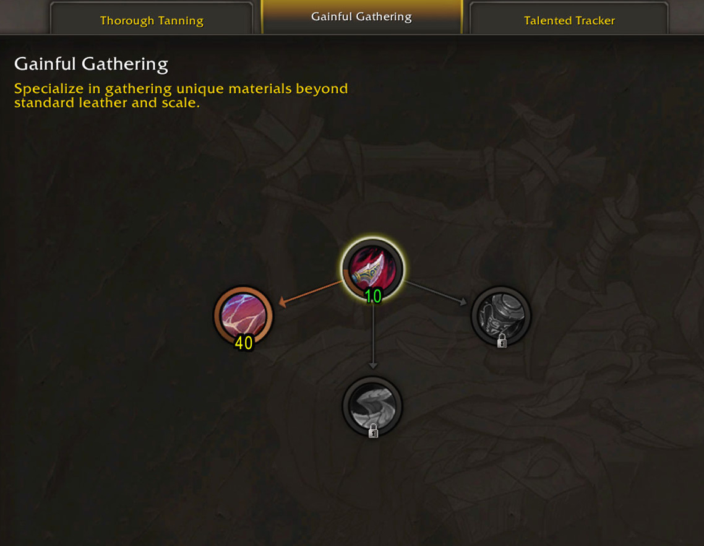
Trophy Taker (Perception)
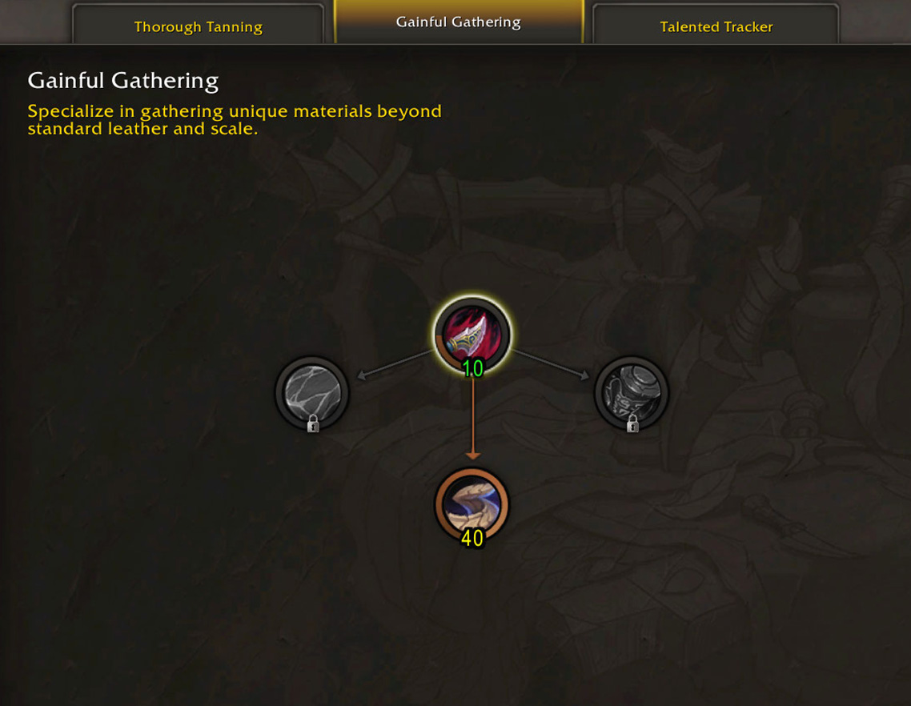
Next steps
At this point, you have most of the important talents. If you picked Careful Carving, now unlock Trophy Taker and put points into it, and if you picked Trophy Taker, unlock Careful Carving and put points into it.
After that, you can start putting points into Talented Tracker to unlock the lures and get some extra gold from Renowned Beasts while you farm, or you can max out the other leather type in Thorough Tanning to get more options for farming different mobs.
Lures & Renowned Beasts Build
This build focuses entirely on the lure system. You will unlock all the zone-specific lures and maximize your chances of getting Epic-quality Majestic Materials from Renowned Beasts.
0-80 Points
- Invest 40 points into the base Talented Tracker node. This unlocks every single lure recipe in the game, including the Grand Beast Lure.
- Learn the Majestic Materials sub-specialization and put 40 points into it. This increases your drop chance for Majestic Materials when skinning Renowned Beasts.
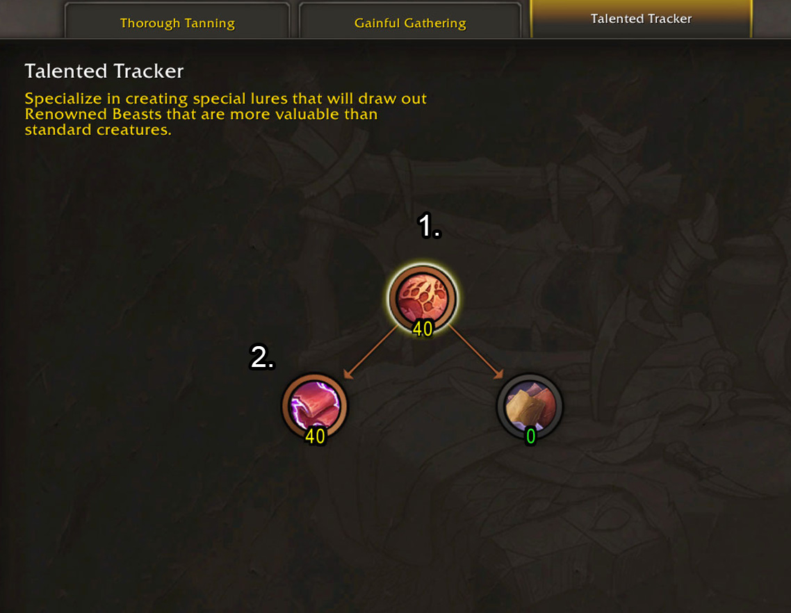
80-120 Points
- Put 40 points into Thorough Tanning to get the extra Sharpen Your Knife charges and increase your overall skinning skill.
- Put 10 points into the base Gainful Gathering node to unlock a sub-specialization.
- Learn Trophy Taker.
- Put 40 points into Trophy Taker to get more Perception.
Thorough Tanning
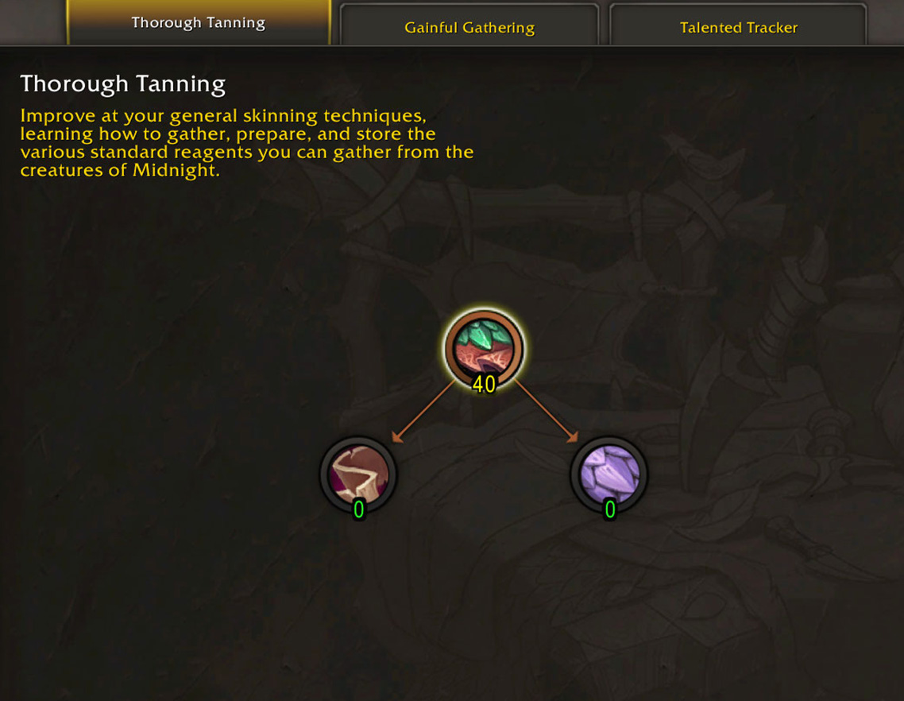
Trophy Taker
Next Steps
At this point, you have most of the important talents. You can pick whatever you want from here, it's probably best to get more skill from the Thorough Tanning tanning tree first, then some Finesse from Careful Carving in Gainful Gathering, then just put points into Component Collector in Talented Tracker.
Where to Farm
Honestly, Blizzard made it pretty hard to find good Leather farming spots. Just like in The War Within, it's very hard to find solo farming spots where you can stay in one place without moving. This expansion is basically the same.
Void-Tempered Leather
This is not really one spot, but an area where you can find a lot of mobs that drop Void-Tempered Leather. You can just do a loop around the marked area.
I'll keep searching for better spots once the expansion is out and more people are farming, but for now this is the best spot I found.
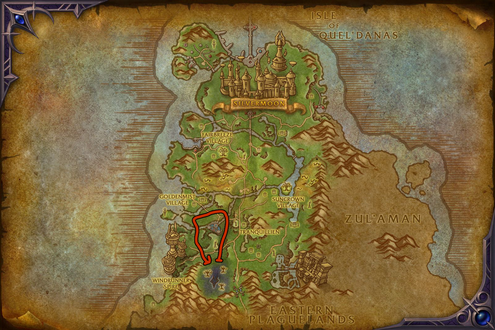
Void-Tempered Scales
For Void-Tempered Scales, the best spot I found is in Zul'Aman around the marked area. You can consistently pull 4-5 Cinderscale Amazard together and they respawn quickly. They aren't grouped very tightly, so it's much easier to pull them if you have a ranged ability, but this is still the only place I found where you can farm without running around the whole zone.
I couldn't find any spots with good respawns in the other zones, so for now, this is the best place for Void-Tempered Scales.
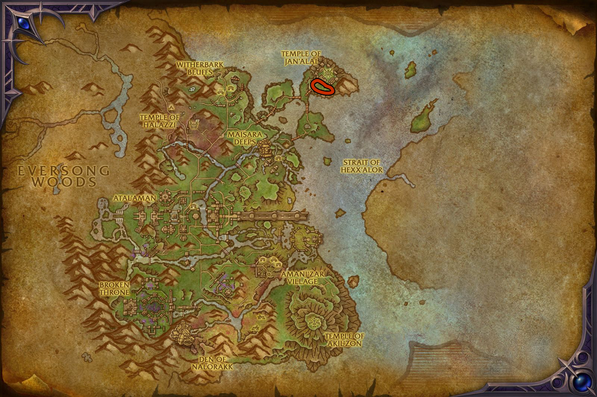